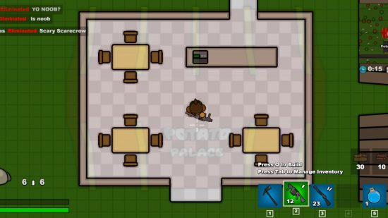
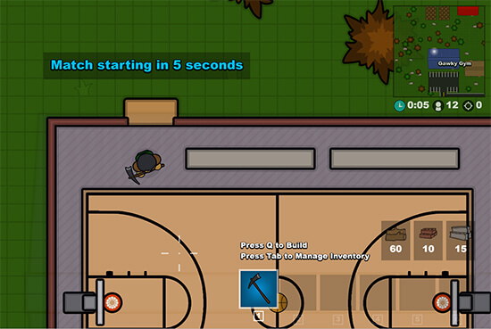
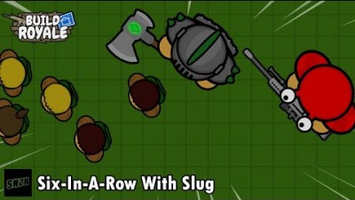

The Hard Truth About Your BuildRoyale.io Runs
You keep dying in the first five minutes. You blame the lag, you blame the storm, you blame the guy with the gold shotgun. Stop lying to yourself. I have over 2000 hours in BuildRoyale.io, and I watch you make the exact same rookie errors every single match. This is a 2D browser game, but it punishes stupidity just as hard as any AAA title. You think clicking a mouse is enough? Wrong. You need to manage resources, master the building meta, and respect the storm. Read every word below. Fix these fatal mistakes, or stay in the lobby forever.

| # | Mistake | Quick Fix |
|---|---|---|
| 1 | You Ignore Material Tiers | Prioritize metal and brick from the moment you land |
| 2 | You Build Flat Walls Instead of Ramps | Always build a ramp first, then place a wall directly behind it |
| 3 | You Loot in the Open During the Storm | Only loot if you have immediate, solid cover |
| 4 | You Fight Without Harvesting First | Spend the first sixty seconds of every match purely farming |
| 5 | You Overbuild and Waste Resources | Build only what you need for the immediate situation |
You Ignore Material Tiers
You just hit whatever is closest, filling your inventory with low-tier wood while completely ignoring brick and metal nodes. You think all building materials are equal. You smash a tree for ten seconds, grab your wood, and run into the mid-game thinking you are prepared. You are not. You are carrying useless timber into a warzone where everyone else is farming high-tier resources. This fundamental misunderstanding of the harvesting meta guarantees you will run out of durable materials when it actually matters.
Wood walls shatter instantly against legendary gold or even purple weapons. In the late-game storm circles, the damage output is massive. If you box yourself in with wood, the first enemy to spot you will melt your cover and you in less than a second. Wood is a trap material for endgame survival, and relying on it means your defensive structures will collapse under basic pressure, leaving you completely exposed to fatal headshots.
Prioritize metal and brick from the moment you land. Wood is strictly for early-game mobility and quick ramps. As the storm shrinks, you must transition to metal for your defensive boxes. Farm metal nodes aggressively in the mid-game. When the final circle hits, your outer shell should be pure metal to absorb those gold weapon bursts. This simple adjustment ensures your cover actually survives the intense late-game firepower, keeping you alive when it matters most.
You Build Flat Walls Instead of Ramps
You spam flat walls when pushed, creating a static, flat box instead of using ramps to gain the high ground. You panic, hit the wall key three times, and trap yourself in a corner. You think stacking walls makes you safe. You are just building a wooden coffin and waiting for the enemy to open the lid. This lazy building habit completely ignores the verticality that defines the combat meta, sacrificing all positional advantage just to feel temporarily safe.
In a 2D battle royale, high ground is everything. Flat walls just trap you in a box where the enemy can easily shoot through the seams, throw explosives over your head, or simply build a ramp over your box. You sacrifice all positional advantage just to feel temporarily safe. When the enemy takes the high ground, you are completely blinded and outgunned, making your inevitable death nothing more than a formality.
Always build a ramp first, then place a wall directly behind it. This gives you the classic high-ground peek. You can shoot down at the enemy while their bullets hit the ramp. Never just stack flat walls. Use the ramp to control the angle, and only use the back wall to block flanks. This tactical approach guarantees you maintain the angle advantage in every single engagement, turning defensive panic into offensive dominance.

You Loot in the Open During the Storm
You see a gold weapon drop in the middle of a field and sprint out into the open to grab it while the deadly storm is actively shrinking. You get tunnel vision on the shiny loot. You ignore the sound of footsteps and the closing damage zone because you want that legendary damage stat. This reckless greed blinds you to the fundamental survival mechanics of the game, prioritizing a single gun over your actual lifespan.
The storm forces everyone into the same tiny, claustrophobic zone. If you are out in the open looting, you have zero cover. The storm damages you, slowing your movement. Anyone hiding in a bush with a common gray SMG will easily track your slow, exposed movement and melt you before you even open your inventory. You trade your life for a weapon you will never get to use, dying to a player who played smart.
Only loot if you have immediate, solid cover. If a gold drops in the open, mark its location on your mental map. Secure your perimeter with a brick wall first. Clear the corners. Once you have a safe extraction route and a defensive box, then you grab the weapon. Never let greed outplay your survival instinct. Secure the area, build your cover, and only then claim your prize, ensuring you live long enough to actually use it.
You Fight Without Harvesting First
You drop into a hot zone, grab the first gun you see, and immediately start shooting at anyone who moves. You completely skip the harvesting phase. You think getting early kills will secure your victory. You engage in a firefight with fifty bullets and zero building materials in your inventory. This aggressive but foolish mindset ignores the core construction mechanic that defines the entire battle royale experience, leaving you completely defenseless the moment the fight turns against you.
The moment you get hit, you panic. You have zero materials to build a wall, edit a ramp, or create cover. You are forced to rely purely on aim in a game designed around construction. You die to the first person who rotated properly and has 500 wood ready to counter-push your aggression. Without materials, you cannot recover from a bad position, turning a minor mistake into an instant elimination.
Spend the first sixty seconds of every match purely farming. Get at least 200 wood and 100 brick before you even think about engaging an enemy. Treat harvesting as your primary weapon. If you hear gunfire, do not run toward it empty-handed. Farm a rock, get your brick, and then rotate to fight. This disciplined approach ensures you always have the tools necessary to dictate the pace of any engagement.
You Overbuild and Waste Resources
You panic-build five layers of walls around yourself every time you hear a single footstep. You drain your entire inventory in three seconds, creating a massive, ugly fortress. You think more walls equal more safety. You just turn yourself into a walking resource piñata for the rest of the lobby. This nervous habit wastes crucial resources on unnecessary structures, blinding you to the actual tactical needs of the fight.
You run out of materials mid-fight. When the enemy actually pushes your final layer, you have absolutely nothing left to counter-build, ramp up, or heal behind. You wasted your metal and brick on unnecessary flat walls. Now you are trapped in a box with no materials, waiting to be picked off. Your overbuilding directly causes your downfall, stripping you of the exact tools you need to survive the push.
Build only what you need for the immediate situation. One wall for cover, one ramp for the angle. That is it. Save your high-tier materials for the actual gunfight and the final storm circles. Efficiency wins games. Do not build a castle when a simple brick box with a ramp will get the job done. Conserve your resources so you always have the answer when the enemy tries to break your defense.

The Bottom Line
Here is the brutal truth. The number one thing that separates winners from losers in BuildRoyale.io is resource management, not just raw aim. Anyone can click heads in a 2D browser game. But only the veterans know when to farm metal, when to use a ramp, and when to hold their building materials for the final storm. Stop treating the building mechanics like an afterthought. Master the harvest, control the high ground, and respect the storm. Drop back in, apply these fixes, and stop feeding the lobby your loot.